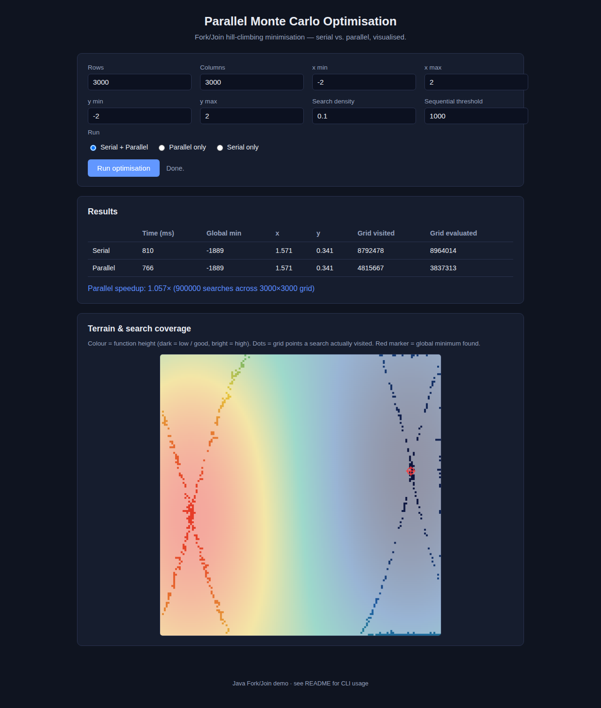
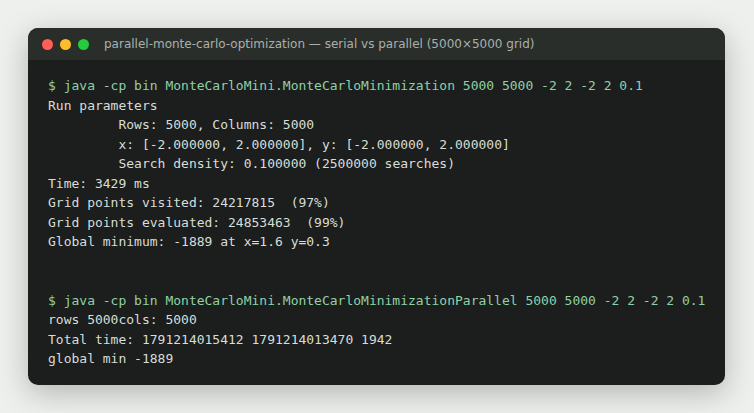
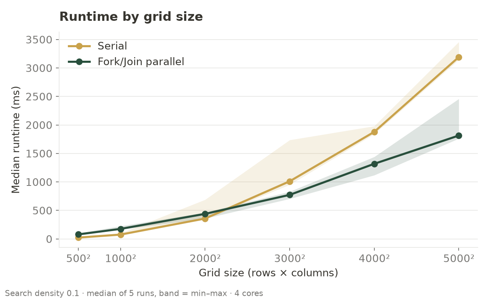
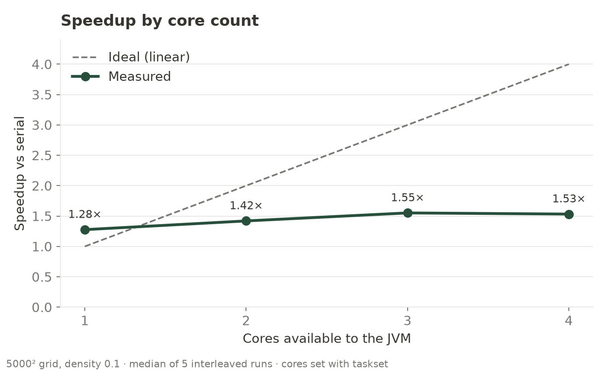

Parallel Monte Carlo Optimisation
Parallelised a Monte Carlo optimisation algorithm using Java’s Fork/Join framework to explore concurrency, scalability, and performance trade-offs in multi-core execution environments.
The project running
The project's web UI runs the serial baseline and the Fork/Join version on the same random seed and shows the terrain, the grid points the searches visited and the global minimum found. The command line gives the benchmark numbers.


Benchmark results
Serial against Fork/Join across grid sizes and core counts, following the benchmark design in the project README: the median of repeated runs to reduce noise from JVM scheduling. These charts come from a fresh run on a four-core machine using the project's own command-line programs, with search density 0.1 and the default sequential cutoff of 1000.



Measured on a shared four-core sandbox, so absolute times will vary by machine. The shape of the results is the point: overhead dominates small problems, and speedup is limited by sequential components and scheduling cost.
Overview
This project explored how parallel execution affects optimisation performance by transforming a serial Monte Carlo optimisation algorithm into a parallel implementation using Java’s Fork/Join framework.
The objective was not only to improve runtime performance, but also to understand practical limits of concurrency, scheduling overhead, workload partitioning, and scalability.
The work focused on algorithm design, correctness validation, benchmarking, and performance analysis across varying workloads.
Parallel Algorithm Design
A serial optimisation implementation was converted into a parallel divide-and-conquer algorithm.
Independent search regions were recursively decomposed into smaller tasks and executed concurrently using shared-memory parallelism.
A configurable sequential cutoff threshold was introduced to control task granularity and minimise scheduling overhead, ensuring work was only parallelised when beneficial.
Execution and Scheduling
Parallel execution was coordinated using a ForkJoinPool which distributed tasks across available processor cores using work-stealing scheduling.
Runtime measurements were collected consistently to support fair comparisons between serial and parallel implementations.
This phase focused on understanding scheduling behaviour, execution overhead, and workload distribution.
Correctness Validation
Correctness was validated by comparing outputs from the parallel implementation against the serial baseline under identical inputs.
Multiple runs were performed to verify repeatability and ensure concurrency introduced no behavioural differences.
Known optimisation functions were used to validate expected optimisation behaviour.
Performance Benchmarking
Serial and parallel performance were benchmarked across different grid sizes, workload densities, and CPU configurations.
Median execution time was used to reduce JVM scheduling noise and improve measurement reliability.
Benchmarks highlighted where parallel execution delivered measurable improvements and where coordination overhead reduced efficiency.
Key Findings
Parallel execution improved performance for larger workloads, particularly when sufficient independent computation existed to justify scheduling overhead.
Speedup remained constrained by sequential components, coordination costs, and task management overhead.
The project demonstrated that parallelism is not automatically beneficial and depends heavily on workload characteristics and task granularity.
What I Learned
This project strengthened my understanding of concurrency, task scheduling, work-stealing execution, and scalability limits in parallel systems.
It also improved how I think about correctness validation, benchmarking methodology, and balancing performance gains against coordination overhead.